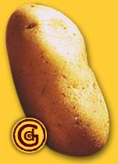

Forums galactiques > Taverne galactique : lieu de discussion informel > ,,,,,;;;::* > Chèvra Sutra! < *::;;;,,,,,
| freestyler Réputation à la taverne : 8  13/07 ETU 21:00 | Score : 0 Détails Ah! Une petite chèvre party me fera le plus grand bien.
Pouvez-vous me prêter (je vous renderai les morçeaux) une chèvre et tous les jouet qui vont avec, s'il vous plait. | ||
| Chevrozer Réputation à la taverne : 223  13/07 ETU 21:03  | Score : 0 Détails Mais biensure!
Regarde la bas. ;) Chevrozer pointa sa petite papatte vers un stand avec une grosse pancarte "CHEVRES, Servez vous" avec pleins de caisses rouge remplits de gadgets. | ||
| freestyler Réputation à la taverne : 8 13/07 ETU 21:07 | Score : 0 Détails freestyler entra dans le petit local et pris les jouets, puis il s'aprocha de l'enclos et regarda toutes les chèvres qui le fixaient avec un air apeuré. Une chèvre un peu timide se cachait au fond, il sauta sur celle-ci, attrapa la corde et la ligota, puis il parti chez lui se détendre un peu avec son nouveau jouet.
| ||
| Chil powo Réputation à la taverne : 406  13/07 ETU 21:08 | Score : 0 Détails Tao Len ?? Niquel ...
Chil Powo attrape une chevre ... Luis attache solidement les pis a un bout de l'élastique et l'autre bout à la grosse raquette que Tao Len vient de lui apporter ... Puis il détache le bout qui est attaché à la raquette ... "Merde je me suis trompé !" Enfin il attaque se bout à un gros crochet qui était juste la par terre ... Enfin .. il lanca la chevre en l'air et frappa de toute ses force dans la chevre qui partit hor de portée de vue .... PAAAF !! L'élastique se tendit au meximum puis commença à se détendre ... La chevre revenait a vitesse super grand V !!! "VITE Tao Len PREPART TOI A FRAPPER !!" | ||
| Chil powo Réputation à la taverne : 406 13/07 ETU 21:14 | Score : 0 Détails Voyant que Tao Len n'allait pas réagir ... Chil Powo refrappa dans la chèvre ...
Un monstrueux revers qui l'envoya plus loin encor !! POUMF !!! Allez prépart toi Tao Len !! "SI QUELQU'UN D AUTRE VEUT JOUER, QU IL NE SE GENE PAS !!" | ||
| Macastril Réputation à la taverne : 773  13/07 ETU 21:38 | Score : 0 Détails "Il faisait froid et sec en ce dur hiver, sur la nation chévrique. Le sol était pauvre. Le pain était rare. Tapise tout au fond de sa hutte, la petite agnelle Chevroute tremblotait. Elle avait faim et était glacée, mais la proximité de sa douce et grande famille lui réchauffait le coeur: en effet, sa mère, Chèvrefolle la Goulue (salope pour les intimes) avait donné naissance à toute une portée de chiards tous plus bâtards les uns que les autres. Mais ils étaient nombreux, et c'est ce qui comptait aux yeux enfantins de la petite Chevroute, qui ne se doutait pas du nombre de mâles qu'il avait fallu pour..."
- Elle est chiante ton histoire! - Hein? - C'est vrai, on s'emmerde! T'étais censé nous torturer, pas nous raconter la vie de Princesse Anne! - Mais vous m'emmerdez, vous-deux! Je vous ai achetées à Chevrozer, je fais CE QUE JE VEUX! - Oui, mais là... - Ferme-la et écoute! Reprenons. "Donc, en bref, on se la prenait et se la mordait ferme chez les chèvres ce soir-là. Quand soudain, un type énoooooooorme défonça la porte! C'était KONNAR LE BARBANT! Le pire maniaque de la région! Et il avait amené sa panoplie de gadgets..." - Alors là, c'est pas du jeu! On voit trop le truc venir! - Ouais! Tu vas travestir l'idée de chevrozer, comme un gros traître. - T'es vraiment un escroc. - Enflure. - Gros con. - MAIS BORDEL DE MEEEEEEEEEEEERDE!!! Et l'orateur, au comble de l'énervement, commença de bastonner les deux chèvres avec tout ce qui lui passait sous la main. C'est alors qu'il comprit. Il comprit la réalité intrinsèque de toute chose. Il comprit la substance trascendentale de l'existence même. IL SE RAPPROCHA DE DIEU! Oui. Car enfin, il put se dire, comme tant de légionnaires avant lui: "Putain, se taper une chèvre, ce que c'est BON! | ||
| Mata Hari Réputation à la taverne : 577  13/07 ETU 23:34 | Score : 0 Détails Je prend la petite chèvre rouge là bas, avec un CD de musique classique, et je reviendrai demain faire ma démonstration, ok ?
| ||
| la lumière éternelle Réputation à la taverne : 21  14/07 ETU 00:32 | Score : 0 Détails une autre chévre svp et
4 cordes ,un Fouet ,un vibromasseur et un Préservatif donc voila 1)chopper la chévre et attachez la ,un mur avec les cordes ,une par patte 2)fouettez ,vivement votre chévre 3)utilisez a puissance maximum le vibromasseur sur la chévre 4)la chévre ne pouvant plus se défendre a bout de force ,faites vous là avec le préservatif | ||
| juju_01 Réputation à la taverne : 15  15/07 ETU 00:51 | Score : 0 Détails /!\ Ames sensibles s'abstenir /!\
juju_01 arrive, il est temps pour lui de participer au concours Alors, ou qu'elle est ma chèvre ? Apercoit une porte émettant des bêlements Ah !! Elle doit etre la. ouvre la porte, il y a une chevre au postérieur en chou fleur Allez vient par la ma petite, VIENT PAR LA ! La chèvre s'approche, ouvre la bouche pour parler et... se prend un coup d'électrocuteur qui la fait tomber, inconsciente Voilà, maintenant que t'es calmée, on va s'amuser ! Voyons, voyons, on va commencer par lui mettre la tenue de cuir, hmm oui ca lui va bien. Ensuite, hmmm...ah oui, lui attacher les 4 pattes avec lacorde, comme ca elle ne s'enfuiera pas au réveil. Bon maintenant, hop, une grenade de chaque type (dégoupillée) dans la bouche, si elle crache ca va etre du feu de dieu !!! Pour eviter qu'elle crache tout de suite, je vais lui coincer la bouche fermée dans le trou du cd tiens, et écrire ce qu'elle a dans la bouche sur la face visible. Ah tiens, un missile, voyons voir, comment l'attacher sur ca ? trouve le fouet Tiens, on va lui mettre ca dans le c**, avec un préservatif, on rigole pas avec les maladies quand même, et on enroule le fouet autour du missile. T'auras intérêt à serrer les fesses ma petite. Bon au cas ou le missile parte sans elle, je vais mettre une hache qui lui tombera dessus au meme moment, et l'AK 47 aussi tient. Bon bah, y'a plus qu'a la réveiller et l'envoyer sur orbite ! Un pti coup de vibro dans l'oreille, ca devrait la revigorer ca. La chèvre se réveille en hurlant, apercoit le message sur le cd, hurle encore plus, et regarde juju_01 en essayant de lui dire quelquechose : -...e ..ui... ch....r - Bon tu va te taire oui ? Paré au décollage ? feu ! Le missile s'envole a mach 10, la chèvre toujours dessus. La hache tombe sur sa queue, le tir de AK 47 lui touche le cou. Un médaillon tombe aux peids de juju_01 Tiens ? c'est quoi ca ? Ah y'a un truc marqué... ***BOUM*** Le missile vient de s'exploser contre le croiseur d'un commandant en stationnement interdit, ca lui apprendras. Notre chevre en a profité pour lacher ses grenades, on la voit ressortir titubante du nuage de fumée, complètemet aveuglée et asphyxiée Hmm alors ce médaillon... Ch... ch... Chevrozer ! juju_01 releve la tete, abasourdi Oups ! Je... je crois que je vais partir ! Tchao !!! juju_01 prend ses jambes a son cou | ||
| Herbert Von Panzer Réputation à la taverne : 502  15/07 ETU 01:37 | Score : 0 Détails Après avoir fait mumuse pendant plusieurs heures avec du fil et une aiguille, Herbert Von Panzer repris sa chèvre recousue (pour ceux qui n'ont pas suivi, elle a explosé après s'être fait défoncer par tous les trous par la vache Milka qui faisait le trottoir).
Il l'avait un peu délaissée (ce qui l'avait fait grandement souffir : la pauvre avait été attachée, avec un baillon, des menotes et une ceinture de chasteté blindée) et voulait donc se faire pardonner (mon oeil... >:D ). Il proposa alors à sa chèvre de passer la journée avec elle. Il commencèrent la journée par une séance de bondage : la chèvre, attachée à vingt trois mètres au dessus du sol, n'eut cependant pas de chance : les cordes cassèrent toute en même temps (comme par hasard...) et l'animal s'écrasa dans un bruit sourd, le bac plein d'aiguilles et de seringues usagées ayant amorti un peu sa chute/ Il l'ammena ensuite en haut d'un pont, et après avoir attaché les pis aux piles du pont, la lança. Le saut à l'élastique, version chèvre, venait d'être inventé ! Après une trentaine d'allers retours qui sonnèrent le glas des pis, ces derniers se rompant, provoquant une douleur extrème chez la pauvre chèvre innocente, Herbert lui fit faire 50 tours de grand huit, attachée sous le wagon, les dents vers l'avant : c'était tellement mieux pour bien se manger toutes les planches en bois le long des rails... Après cette délicate après-midi, Herbert , en pleine euphorie, ammena sa nouvelle amie caprine au restaurant, où elle figurait bien sûr au menu. Ce fut un instant magique : Les deux crops se mélèrent, l'un entrant dans l'autre, et faisant un léger plouf lorsqu'un morceau tombait dans l'estomac de Von Panzer. Il dit alors à son amie, au moment de manger le dernier morceau : "A demain, dans mes toilettes... Ce n'eeeeest qu'un aurevooooiiiiir ma chèèèèèvre, ce n'est qu'un aurevoooooiiiir ! Car nous nous reverrons ma chèèèèèèvre caaaar nous nous reveroooooons !" Et comme toutes les histoire attendrissantes ont une morale : ne mangez pas de chèvre, ça fout des brulures d'estomac, surtout si la chèvre est morte depuis plus de 48 heures... Déçu, Herbert alla regarder Guillaume Tell qui avait placé Zidanette sur un stade d'Astrofoot et l'obligeait à taper en continu des défenseurs parlant dans la même langue qu'Arigliano Arguello. | ||
| Tao Len Réputation à la taverne : -63  15/07 ETU 14:08 | Score : 0 Détails de son coté,Tao Len frappait la chèvre de centaines de coups enchainés à une vitesse surhumaine...
| ||
| Macastril Réputation à la taverne : 773 15/07 ETU 14:24 | Score : 0 Détails Heu...
C'est bien joli tout ça, mais il se finit quand, ce jeu? | ||
| Tao Len Réputation à la taverne : -63 15/07 ETU 15:00 | Score : 0 Détails C'est vrai ça,bonne question!
| ||
| Mata Hari Réputation à la taverne : 577 15/07 ETU 15:09 | Score : 0 Détails Mata Hari, dans un esprit de paix et de fraternité avec les chèvres, pris la chèvre par le sabot gauche, et lui fit enfiler quatre patins à glace pour s'élancer sur les eaux rouges et gelées du lac de Newdeun. Allez ma biquette, triple lutz piqué !
| ||
| Kaboum Réputation à la taverne : 31  16/07 ETU 08:22 | Score : 0 Détails En se levant, le commandant Kaboum était d’humeur taquine. Il avait envie de s’amuser. Quoi de mieux qu’une bonne partie de Chevra Soutra ! Il arriva dans la salle et dit :
« Bonjour, chef Alors comment ca va aujourd’hui ? Le business ça marche toujours ? Ah oui la concurrence est rude … C’est surement due à l’universalisation du marché … Comment ! Les marmottes commencent à prendre des parts de marchés importantes ! Pfff certaines personnes n’ont vraiment aucun esthétisme. Allez ne faites pas cette tète là. Pour la peine je vais vous prendre une douzaine de chèvre bien grasse si vous n’y voyez pas d’inconvénient, il y a un petit projet qui me tient à cœur depuis quelques années et que j’aimerais réaliser. Ah oui j’oubliais, peut on avoir des chèvres de plusieurs couleurs différentes ?» | ||
| Eiganjo Réputation à la taverne : 289  17/07 ETU 12:58 | Score : 0 Détails chevrozer tu peux finir le jeu?
| ||
| Chevrozer Réputation à la taverne : 223 17/07 ETU 23:54 | Score : 0 Détails J'attend encore que le sujet ce remplisse de magnifique récits témoignant de l'éternel amitié Hommes/Chèvres.
| ||
| grosse patate Réputation à la taverne : 0  17/07 ETU 23:56 | Score : 0 Détails Bonjour chevrozer , fais-tu du fromage ?
| ||
| Chevrozer Réputation à la taverne : 223 17/07 ETU 23:58 | Score : 0 Détails Bha oui pourquoi? °_o
| ||
| grosse patate Réputation à la taverne : 0 17/07 ETU 23:59 | Score : 0 Détails bah...eu...pour savoir si tu es utile si on te capture
|
Forums galactiques > Taverne galactique : lieu de discussion informel > ,,,,,;;;::* > Chèvra Sutra! < *::;;;,,,,,